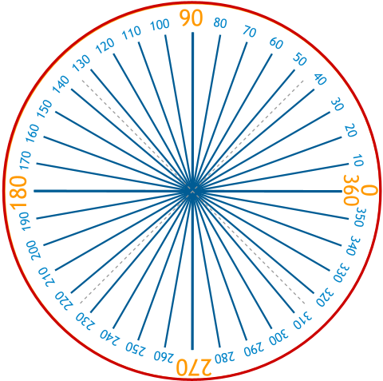
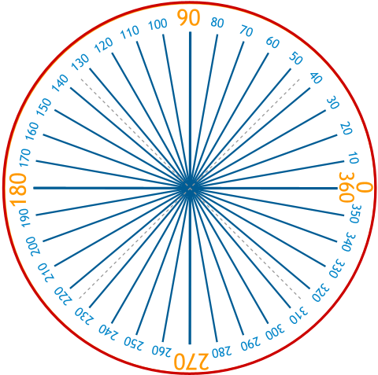

Foundation Mathematics
1017SCG
Week 3
Topics for Week 3
- Radians
- Special Triangles
- Unit Circle
Radians
 

Radians
Radians
|
|
\(\theta = \dfrac{\text{Arc length}}{\text{Radius}}\) \(\theta = \dfrac{ r}{r }\) \(=1\,\text{radian}\) |
Radians
|
|
\(\theta = \dfrac{\text{Arc length}}{\text{Radius}}\) \(\theta = \dfrac{2 r}{r }\) \(\;\;\; =2\,\text{radians}\) |
Radians
|
|
\(\theta = \dfrac{\text{Arc length}}{\text{Radius}}\) \(\theta = \dfrac{3 r}{r }\) \(\;\;\; =3\,\text{radians}\) |
Radians
|
|
\(\theta = \dfrac{\text{Arc length}}{\text{Radius}}\) \(\theta = \dfrac{2\pi r}{r }\) \(\;\;\; =2\pi\,\text{radians}\) |
Radians

By Lucas Vieira
Radians
Two different measurements of an angle:
|
Degrees |
Radians |
How do we convert degrees to radians and vice versa?

How do we convert degrees to radians and vice versa?
\(\large 360^{\circ} = 2\pi \,\text{radians}\)
\(\large \dfrac{360^{\circ}}{360} = \dfrac{2\pi}{360} \,\text{radians}\)
\(\large 1^{\circ} =\dfrac{\pi}{180} \,\text{radians}\)
Degrees to Radians
How do we convert degrees to radians and vice versa?
\(\large 2\pi \,\text{radians} = 360^{\circ} \)
\(\large \dfrac{2\pi }{2\pi}\,\text{radians} = \dfrac{360^{\circ} }{2\pi} \)
\(\large 1 \,\text{radian} =\dfrac{180^{\circ}}{\pi} \)
\(\large 1 \,\text{radian} =\dfrac{180}{\pi}\, \text{degrees} \)
Radians to Degrees
How do we convert degrees to radians and vice versa?
Degrees to Radians:
\[ \begin{eqnarray*} \large 1^{\circ} =\dfrac{\pi}{180} \,\text{radians} \end{eqnarray*} \]
Radians to Degrees:
\[ \begin{eqnarray*} \large 1\, \text{radian} = \dfrac{180}{\pi}\,\text{degrees} \end{eqnarray*} \]
How do we convert degrees to radians and vice versa?
Example 1 (Degree to radian): \( \;\large 30^{\circ} \;\)
\( 30^{\circ} \times \dfrac{\pi}{180} \) \( = \dfrac{30\pi}{180} \)
\(\qquad \quad\;\; =\dfrac{3\pi}{18}\)
\( \qquad \qquad\qquad =\dfrac{\pi}{6} \,\text{radians}\)
Therefore \( \,30^{\circ} = \dfrac{\pi}{6} \,\text{radians}\)
How do we convert degrees to radians and vice versa?
Example 2 (Degree to radian):\( \; \large 45^{\circ} \)
\( 45^{\circ} \times \dfrac{\pi}{180} \) \( = \dfrac{45\pi}{180} \;\;\)
\( \qquad\qquad \quad\; =\dfrac{\pi}{4} \,\text{radians}\)
Therefore \( \,45^{\circ} = \dfrac{\pi}{4} \,\text{radians}\)
How do we convert degrees to radians and vice versa?
Example 3 (Degree to radian): \( \; \large 60^{\circ} \)
\(60^{\circ} \times \dfrac{\pi}{180} \) \( = \dfrac{60\pi}{180}\)
\( \qquad\qquad \qquad =\dfrac{\pi}{3} \,\text{radians}\)
Therefore \( \,60^{\circ} = \dfrac{\pi}{3} \,\text{radians}\)
How do we convert degrees to radians and vice versa?
Example 4 (Radian to degree): \(\; \large \dfrac{2\pi}{3} \)
\( \dfrac{2\pi}{3} \times \dfrac{180}{\pi} \) \( = \dfrac{360}{3} \;\;\)
\(\qquad \qquad =120^{\circ}\;\)
Therefore \( \,\dfrac{2\pi}{3} \,\text{radians} = 120^{\circ} \)
How do we convert degrees to radians and vice versa?
Example 5 (Radian to degree):\(\; \large \dfrac{3\pi}{4} \)
\( \dfrac{3\pi}{4} \times \dfrac{180}{\pi} \) \( = \dfrac{540}{4}\)
\(\qquad \qquad\; =135^{\circ}\;\)
Therefore \( \,\dfrac{3\pi}{4} \,\text{radians} = 135^{\circ} \)
Common notation
| Degrees | Radians |
|
|
Special Triangles
Special Triangles
Special Triangles
|
\(\sin \left(30^{\circ }\right)\) \(=\dfrac{1}{2}\) \(\cos \left(30^{\circ }\right)\) \(=\dfrac{\sqrt{3}}{2}\) \(\tan \left(30^{\circ }\right)\) \(=\dfrac{1}{\sqrt{3}}\) |
\(\sin \left(\dfrac{\pi}{3}\right)\) \(=\dfrac{\sqrt{3}}{2},\;\;\) \(\cos \left(\dfrac{\pi}{3}\right)\) \(= \dfrac{1}{2},\;\;\) \(\tan \left(\dfrac{\pi}{3}\right)\) \(= \dfrac{\sqrt{3}}{1}\)
Special Triangles
|
\(\sin \left(\dfrac{\pi}{2}\right)\) \(=\dfrac{1}{\sqrt{2}}\) \(\cos \left(\dfrac{\pi}{2}\right)\) \(=\dfrac{1}{\sqrt{2}}\) \(\tan \left(\dfrac{\pi}{2}\right)\) \(=\dfrac{1}{1} \) |
Special Triangles
We can compute some exact values of $\sin$/$\cos$/$\tan$
Special Triangles
But what if the angle is something other than
30, 45, or 60 degrees?
The Unit Circle
The Unit Circle

|
\(P = \left(\cos \theta, \sin \theta\right)\) \(\;\;\; = \left(\cos 0^{\circ}, \sin 0^{\circ}\right)\) \(\;\;\; = \left(1, 0\right)\) |
The Unit Circle
|
\(P = \left(\cos \theta, \sin \theta\right)\) \(\;\;\; = \left(\cos 90^{\circ}, \sin 90^{\circ}\right)\) \(\;\;\; = \left(0, 1\right)\) |
The Unit Circle
|
\(P = \left(\cos \theta, \sin \theta\right)\) \(\;\;\; = \left(\cos 180^{\circ}, \sin 180^{\circ}\right)\) \(\;\;\; = \left(-1, 0\right)\) |
The Unit Circle
|
\(P = \left(\cos \theta, \sin \theta\right)\) \(\;\;\; = \left(\cos 270^{\circ}, \sin 270^{\circ}\right)\) \(\;\;\; = \left(0, -1\right)\) |
The Unit Circle
The Unit Circle
The Unit Circle
The Unit Circle

What is next?
- Watch the fifth video on Canvas site.
Topic: "Like and Unlike Terms" - Prepare for Progress Test 1.
- Watch the week 4 video content before your scheduled week 4 workshop.